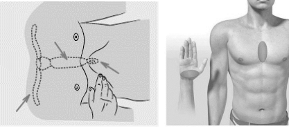

Техника непрямого массажа сердца.
При проведении закрытого массажа сердца пациент должен находится на твердой ровной поверхности, на уровне колен оказывающего помощь или лежать на зеле, а реаниматолог становится рядом с пострадавшим на колени.
Точка давления на грудину должна располагаться на границе средней и нижней трети последней. Для определения этой точки удобно использовать горизонтальную линию, соединяющую соски. В качестве альтернативного метода прощупывают основание мечевидного отростка (где нижние края реберной клетки соединяются по средней линии), кладут поперечно два пальца над этой точкой и вплотную к ним помещают край ладони (рис. 7).

Рисунок 7. Место компрессии.
Компрессии грудной клетки реанимирующий должен проводить двумя руками, причем непосредственно с поверхностью грудной клетки пациента должно соприкасаться основание ладони одной из них. Анатомически под основанием ладони подразумевается область над пястными костями, сформированная мышечными образованиями - большим (thenar) и малым (hypothenar) ладонными буграми, между которыми располагается удерживатель мышц сгибателей (retinaculum mm. flexorum), находящийся в дне ладонной ямки (рис. 7).
Именно данная ямка должна совпадать с точкой на грудине, определенной в ходе предыдущего этапа. Кисть нижней руки реанимирующего на поверхности грудной клетки должна располагаться таким образом, чтобы вся прилагаемая сила приходилась на грудину, т.е. большой и малый ладонные бугры располагались на грудине, а не на грудино-реберных сочленениях, представляющих собой хрящевые отделы ребер и не способных воспринимать оказываемую в ходе компрессий нагрузку. Данное положение ладони должно сохраняться вне зависимости от положения реанимирующего относительно пациента.
Вторую ладонь устанавливают поверх первой, при этом пальцы на нижней ладони остаются приподнятыми. Чтобы избежать перелома ребер надавливанием на боковые части грудной клетки, лучше сомкнуть ладони «в замок» (рис. 8).
Рисунок 8. Положение рук при непрямом массаже сердца.
При выполнении закрытого массажа сердца необходимо соблюдать следующие условия (рис. 9):
• руки реанимирующего должны быть выпрямлены в локтевых суставах, как при выполнении компрессий, так и в покое;
• лопатки реанимирующего должны проецироваться на грудину пациента;
• выполнение компрессий происходит за счет массы тела и мышц спины реанимирующего;
• после каждой компрессии грудная клетка должна полностью освобождаться от нагрузки (полностью расправляться);
• руки реанимирующего между компрессиями не отрываются от поверхности грудной клетки;
• периоды надавливания и освобождения грудной клетки от сдавления должны быть равными по времени;
• глубина компрессий должна достигать 5 см, но не более 6 см;
• частота компрессий 100-120 раз в минуту.
Рисунок 9. Положение корпуса при проведении непрямого массажа сердца.
Типичные ошибки при проведении НМС:
1) нет жесткой основы для проведения массажа сердца (массаж сердца в кровати);
2) резкие, рывкообразные и поэтому слишком короткие массажные толчки;
3) невертикальное направление массажного толчка;
4) паузы более 3 с;
5) сдавливание груди в проекции мечевидного отростка, а не нижней половины грудины, как следствие – повреждение печени при переломе мечевидного отростка;
6) смещение массажной площадки в стороны (чаще влево) от средней линии, как следствие – чаще происходят переломы ребер с клиникой разбитой грудной клетки и неэффективной фазой декомпрессии;
7) руки отрываются от грудины и резко ставятся на нее снова, как следствие – увеличивается опасность повреждения ребер).